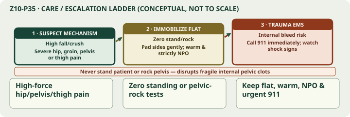

Z10-P35 · Wilderness medicine · New manuscript
Treat suspected pelvis or femur fractures as life-threatening shock emergencies
Recognize massive internal bleeding risk in hip, pelvis, or thigh-bone trauma and enforce strict immobility and EMS activation.
When it applies · High-force falls, crush injuries, or impacts causing severe hip, groin, pelvic, or mid-thigh pain and inability to move or bear weight.
Equipment · Ground insulation, blankets, soft side padding, and emergency communications.

Actions
- Activate 911/SAR immediately for suspected pelvic or femur fracture—both can bleed rapidly into deep internal compartments and trigger fatal hemorrhagic shock without visible external blood.[M09, M05, T02]
- Keep the person completely flat and still where found, do NOT rock or squeeze the pelvis repeatedly to "test stability," and place soft padding gently beside the legs and hips for comfort without rolling the patient.[M09, M05]
- Insulate heavily against cold ground, keep strictly NPO, monitor mental status and breathing continuously, and await trained EMS/SAR extraction teams.[M05, E05, M20]
Failure recognition · Trying to help a hiker with severe hip/pelvis pain stand up and hop to a vehicle, disrupting a fragile internal pelvic clot.[M09, M05]
Verify · Confirm the patient remained flat and still, zero pelvic-rocking tests were performed, warmth is maintained, and SAR knows urgent trauma carry is needed.[M09, M05, T02]
Stop or change course · Any worsening pallor, restlessness, confusion, or rapid breathing signals active internal shock demanding immediate dispatch update.[M05, T02]
Evidence and editorial notes
- E05 · NWS · What To Do If You're Caught in a Winter Storm (current web edition)
- Section: Outside and find shelter · Conditions: Cold, wet or windy winter conditions
Support: Block wind, stay dry and keep off cold ground. Keep exposure reduction separate from making a fire.
Limitations: Improvised windbreaks do not provide rated thermal protection or snow-load capacity. · Conflicting evidence: None; aligns with CDC-H.
Editorial note: Separates wind, ground, and moisture heat-loss pathways. · Specialist reviewer: Cold-weather shelter specialist
Primary source · checked 2026-11-24 - M05 · NIH / MedlinePlus · Shock (current web edition)
- Section: Recognizing Circulatory Shock and Positioning · Conditions: Injured or ill patient with pale cool clammy skin, rapid weak pulse, confusion, or dizziness
Support: Treat suspected shock as a life-threatening emergency: call 911, control external bleeding, keep the person warm and insulated from cold ground, and do not give food or drink.
Limitations: Field responders cannot diagnose internal hemorrhage or administer IV fluids. · Conflicting evidence: None; reinforces keeping suspected shock patients NPO and warm.
Editorial note: Core shock recognition and stabilization boundary in Z10. · Specialist reviewer: Emergency and wilderness medicine
Primary source · checked 2026-11-24 - M09 · NIH / MedlinePlus · Fractures (current web edition)
- Section: Suspected Fracture Stabilization and Neurovascular Checks · Conditions: Suspected limb fracture, deformity, or inability to bear weight
Support: Immobilize the injured limb in the position found using padded support without attempting to straighten visibly deformed bones; check circulation, sensation, and movement beyond the injury and arrange evacuation.
Limitations: Open fractures (bone breaking skin) and femur/pelvis injuries carry high bleeding and infection risk requiring urgent EMS. · Conflicting evidence: None; forbids lay fracture reduction in routine field care.
Editorial note: Anchors splinting, neurovascular checks, and evacuation urgency in Z10. · Specialist reviewer: Orthopedics and wilderness medicine
Primary source · checked 2026-11-24 - M20 · NIH / MedlinePlus · First Aid Overview (current web edition)
- Section: Lay First-Aid Scope, Kit Readiness, and Documentation · Conditions: Pre-trip kit preparation and remote patient monitoring
Support: Maintain an inspected, unexpired first-aid kit matched to your actual training, keep written patient observations (time, responsiveness, breathing, symptoms, interventions) for EMS handoff, and practice skills in certified courses.
Limitations: Carrying advanced medical instruments without clinical training adds risk rather than capability. · Conflicting evidence: None; aligns with ARC and NPS-K.
Editorial note: Anchors kit sizing, SOAP-style lay observation logs, and scope-of-practice cards. · Specialist reviewer: Wilderness EMS and clinical education
Primary source · checked 2026-11-24 - T02 · American Red Cross · First Aid Steps (current web edition)
- Section: First Aid Steps > Call 9-1-1 · Conditions: Lay emergency response to unresponsiveness, abnormal breathing or severe bleeding
Support: Activate EMS and get needed equipment. Follow dispatcher directions and act within training.
Limitations: Remote locations may delay EMS arrival, requiring sustained stabilization after activation. · Conflicting evidence: None; aligns with NPS-E.
Editorial note: Mandates early emergency activation and dispatcher adherence. · Specialist reviewer: EMS and wilderness medicine
Primary source · checked 2026-11-24
Source lineage · NIH MedlinePlus Fractures and Shock; new manuscript · Classification · New manuscript.